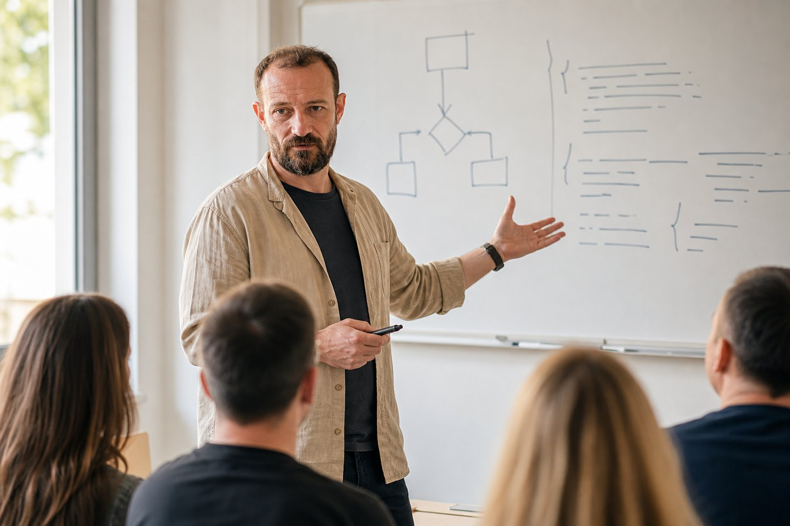

Решать варианты подряд
Ошибка повторяется, потому что её причина не разобрана: формула, модель, вычисление или невнимательность.
ОГЭ · ЕГЭ · 7–11 класс · онлайн
Математика, физика и информатика без гонки по вариантам вслепую. Сначала находим пробелы, затем собираем маршрут и учимся решать самостоятельно — в том числе с ИИ, но без подмены мышления.
Диагностика работает прямо на сайте и ничего не отправляет.
Что обычно не работает
Если ученик не видит карту тем, повторяет одни ошибки и получает готовые ответы от нейросети, часы подготовки складываются — а навык нет.
Ошибка повторяется, потому что её причина не разобрана: формула, модель, вычисление или невнимательность.
Понимание проверяется не ощущением «ясно», а новой задачей без подсказки.
Нейросеть полезна как тренажёр вопросов и проверки, но вредна как автоматическая выдача решения.
Рабочий маршрут
Короткий цикл даёт понятную обратную связь и ученику, и родителю.
Определяем текущий уровень, цель, темы-провалы и типичные ошибки. Не «плохо знает математику», а конкретная карта.
Разбираем идею, решаем вместе, затем ученик делает похожую задачу сам и объясняет ход решения.
Ведём журнал ошибок, делаем контрольные срезы и меняем план по фактам, а не по ощущениям.
Три предмета, одна логика
Программа сверяется с актуальными демоверсиями и кодификаторами ФИПИ; список тем обновляется перед каждым учебным годом.
ОГЭ · ЕГЭ
От алгебраической техники до вероятности, статистики и задач с параметрами. Отдельно тренируем запись и проверку ответа.
Свериться с ФИПИ ↗ОГЭ · ЕГЭ
Сначала явление и модель, затем формулы. Учимся переводить условие в схему, выбирать законы и проверять размерность.
Свериться с ФИПИ ↗ОГЭ · ЕГЭ
Логика, алгоритмы, таблицы, программирование и стратегия компьютерного экзамена. Код понимаем, а не заучиваем.
Свериться с ФИПИ ↗Бесплатные материалы
Короткие карты тем с примерами, самопроверкой и понятным следующим шагом.
8 вопросов для ученика и три действия на неделю.
Пройти →Степени, формулы, уравнения и системы.
Скачать →Фигуры, площади и теорема Пифагора.
Скачать →Биты, байты, алфавит и системы счисления.
Скачать →Ввод, условия, циклы и ошибки новичка.
Скачать →Формулы, единицы СИ и алгоритм решения.
Скачать →
ИИ для учёбы
Ученик получает промпты, которые не выдают ответ сразу, а помогают найти ошибку, задать следующий вопрос и проверить собственное решение.
Форматы запуска
Стартовые цены для тестового набора. Формат выбирается после диагностики, а не по принципу «чем дороже, тем лучше».
Самостоятельно
0 ₽
Диагностика на сайте, карта рисков и 10 безопасных промптов для учёбы.
Народный формат
290 ₽/мес
Вопросы по математике, физике и информатике. Подсказки, короткие разборы и архив решений.
Основной продукт
1 990 ₽/мес
Еженедельный разбор задач, закрытая база, тематический план и ответы на вопросы участников.
Персонально
от 2 500 ₽/60 мин
Индивидуальный маршрут для сложных пробелов, высокой цели или ограниченного времени.
Чат и клуб запускаются после набора первой группы. Оплата — только после подтверждения старта и правил.
Для родителей
Вам не нужно решать задачи за ребёнка или каждый вечер спрашивать: «Ты занимался?» Нужны несколько наблюдаемых показателей.
Темы, которые ученик уже решает без подсказки.
Не общая оценка, а конкретный тип сбоя.
Одна понятная цель до следующего контрольного среза.
О преподавателе
Я Андрей Индыков. По образованию физик, около 15 лет работал в IT — от инженера-программиста до руководителя отдела. Преподавал информатику в ВГУ и ВГТУ, читаю практические лекции по ИИ.
В работе соединяю предметное объяснение, методику и понимание того, как ученик думает. Типологии и НЛП использую только как рабочие гипотезы для коммуникации, а не как ярлыки или научную диагностику.
Коротко о важном
Нет. На результат влияют стартовый уровень, срок, регулярность работы и состояние на экзамене. Можно дать прозрачный план, измерять прогресс и вовремя менять стратегию.
Приучит, если просить готовые ответы. Поэтому используем режим тренажёра: одна подсказка, проверка попытки, поиск ошибки и объяснение учеником.
Когда пробелы неоднородны, цель высокая, времени мало или ученику сложно задавать вопросы в группе. Для системного повторения часто достаточно клуба или мини-группы.
Да. Пройдите диагностику готовности и возьмите набор учебных промптов. Если нужен взгляд преподавателя, отправьте результат Андрею.
Первый шаг
Ответьте на 10 вопросов. Получите оценку риска, первые действия и текст, который можно отправить преподавателю.